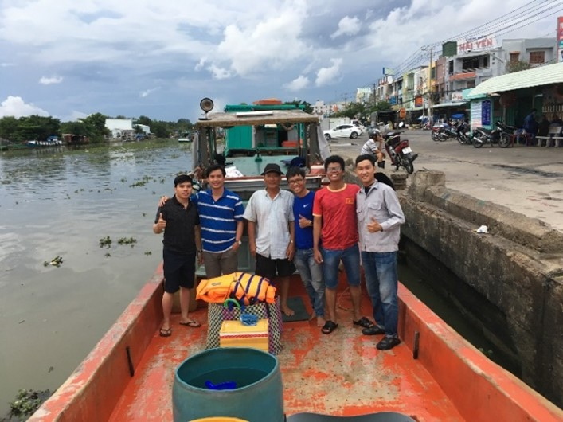

Giới thiệu chung
Tiền thân là Trung tâm Nghiên cứu Khai thác Tài nguyên Biển & Đới bờ (thành lập năm 2008 theo Quyết định số 2863/QĐ-BNN-TCCB ngày 18/9/2008 của Bộ NN&PTNT), Trung tâm Tài nguyên Biển và Quản lý Rủi ro Thiên tai chính thức mang tên gọi mới theo Quyết định số 1916/QĐ-BNNMT ngày 25/05/2026 của Bộ Nông nghiệp và Môi trường, trực thuộc Viện Kỹ thuật Biển – Viện Khoa học Thủy lợi Việt Nam.
Kế thừa bề dày kinh nghiệm, Trung tâm tự hào là đơn vị nòng cốt chuyên thực hiện nghiên cứu khoa học, cung cấp dịch vụ tư vấn và chuyển giao công nghệ trong lĩnh vực tài nguyên biển và đới bờ. Chúng tôi không ngừng phát triển thông qua các công trình nghiên cứu chuyên sâu, chương trình đào tạo và mạng lưới hợp tác rộng khắp trong nước cũng như quốc tế.
Nhiệm vụ
Tiến hành nghiên cứu, tư vấn, phát triển và chuyển giao công nghệ phục vụ quản lý bền vững tài nguyên biển và đới bờ.
Xem thêm nhiệm vụPhương thức hoạt động
Liên kết nghiên cứu, đào tạo, hợp tác và triển khai ứng dụng thực tiễn trong nước và quốc tế.
Xem thêm phương thức hoạt độngCác lĩnh vực nghiên cứu
Những hướng nghiên cứu và chuyển giao công nghệ trọng tâm của Trung tâm.
Năng lượng biển
Khảo sát năng lượng thủy triều, sóng và gió phục vụ phát triển bền vững.
Tài nguyên biển
Đánh giá khoáng sản đáy biển, nguồn lợi thủy hải sản và hệ sinh thái ven bờ.
Nuôi trồng thủy hải sản
Phát triển mô hình nuôi trồng vùng cửa sông, ven biển và hải đảo.
Hệ sinh thái ven biển
Nghiên cứu phục hồi rừng ngập mặn, dải cát và cảnh quan ven biển.
Công nghệ số & AI
Ứng dụng mô hình số, trí tuệ nhân tạo và tự động hóa trong quản lý biển.
GIS & Viễn thám
Quan trắc vùng biển bằng hệ thống thông tin địa lý và dữ liệu viễn thám.
Chính sách biển
Đề xuất cơ chế chính sách phát triển bền vững và quản lý nguồn lực biển.
Công trình & Cấp nước
Nghiên cứu công trình thủy, đê điều và giải pháp cấp nước vùng ven biển.
Quan trắc & Cảnh báo
Xây dựng hệ thống giám sát, dự báo và cảnh báo sớm thiên tai vùng biển.
Đào tạo & Hướng dẫn
Hỗ trợ đào tạo, hướng dẫn luận văn và phát triển nhân lực ngành biển.
Cơ cấu tổ chức
Bộ môn Thủy động lực môi trường
Chịu trách nhiệm nghiên cứu thủy động lực, môi trường và giải pháp kỹ thuật cho vùng ven biển.
Đội khảo sát hiện trường
Thực hiện khảo sát thực địa, thu thập số liệu và hỗ trợ triển khai đề tài.
Đội ngũ cán bộ khoa học
Trung tâm có đội ngũ chuyên gia và cán bộ nghiên cứu trong các lĩnh vực kỹ thuật bờ biển, thủy văn, GIS, WebGIS, công trình thủy và trí tuệ nhân tạo.

TS. Phan Mạnh Hùng
GĐ Trung tâm
Chuyên môn: Kỹ thuật bờ biển; động lực thủy hải văn tính toán; viễn thám.
Email: pmhung@icoe.org.vn ; hungphanvktb@gmail.com

ThS. Nguyễn Thanh Tùng
PGĐ Trung tâm
Chuyên môn: Công trình thủy lợi, kỹ thuật xây dựng.
Email: thanhtung48c@gmail.com

ThS. Nguyễn Trường Thọ
Cán Bộ Nghiên Cứu
Chuyên môn: Xây dựng công trình thủy.
Email: nguyentruongtho12@gmail.com

ThS. Hà Thị Xuyến
Cán Bộ Nghiên Cứu
Chuyên môn: Thủy văn; môi trường; cấp thoát nước.
Email: xuyenht79@gmail.com

KS. Trần Thanh Kỳ
Cán Bộ Nghiên Cứu
Chuyên môn: Xây dựng công trình thủy.
Email: thanhkybk@gmail.com

ThS. Phạm Vũ Phương Trang
Cán Bộ Nghiên Cứu
Chuyên môn: Động lực thủy hải văn tính toán; trí tuệ nhân tạo.
CN. Phan Thị Tuyết Minh
Cán Bộ Nghiên Cứu
Chuyên môn: Đang cập nhật.
Email: Đang cập nhật.

CN. Nguyễn Võ Yến Linh
Cán Bộ Nghiên Cứu
Chuyên môn: Hệ thống thông tin địa lý; công nghệ WebGIS.
Email: nvyenlinh05@gmail.com
CN. Nguyễn Bá Khôi
Cán Bộ Nghiên Cứu
Chuyên môn: Đang cập nhật.
Email: Đang cập nhật.

Thiết bị và công nghệ

Mini Buoy
Thiết bị đo và ghi dữ liệu sóng, dòng chảy và vị trí trong môi trường biển.

Wave Gauge
Hệ thống quan trắc mực nước và biến đổi thủy triều theo thời gian thực.

GPS Trimble R8s
Thiết bị hỗ trợ khảo sát, đo đạc và chuẩn hóa dữ liệu không gian cho công tác nghiên cứu.

Flycam
Hỗ trợ ghi hình, quan sát thực địa và thu thập dữ liệu hình ảnh phục vụ giám sát.
Đề tài và dự án
Hỗ trợ cấp nước cho vùng thiếu nước ở Nam Bộ
Nghiên cứu giải pháp tạo nguồn, trữ và cấp nước ngọt phục vụ dân sinh và phát triển kinh tế trên các vùng đảo và khu vực khan hiếm nước.
Phòng chống sạt lở và biển lấn vùng ven biển
Đề xuất giải pháp kỹ thuật và quản trị nhằm giảm rủi ro cho các đoạn bờ có nguy cơ cao và hạ tầng ven biển.
Ứng dụng mô hình số và viễn thám trong quản lý tài nguyên
Phát triển hệ thống giám sát, đánh giá và dự báo phục vụ quản lý tài nguyên biển và đới bờ.
Hình ảnh hoạt động
